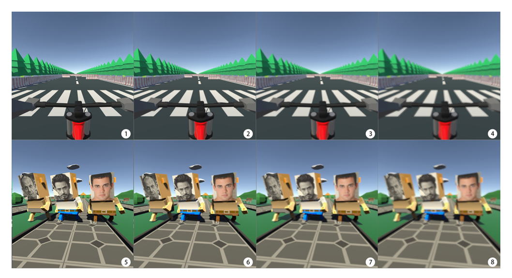
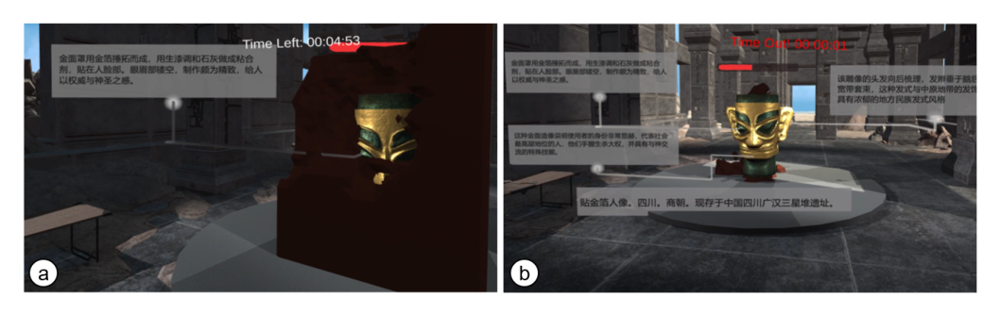
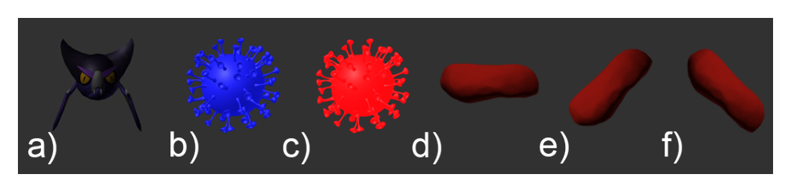

Awards
Paper awards, nominations and competition finalists.
ACM CHI 2026
Best Paper Honorable Mention Award
Xuanhui Yang, Xuning Hu, Hai-Ning Liang, Xiaojuan Ma
IEEE VR 2026
Best Poster Award
Yi Zou, Ao Yu, Ziming Li, Hai-Ning Liang, Pan Hui
ACM VRST 2025
Best Paper Award Nomination
NominationMohammadreza Amini, Wolfgang Stuerzlinger, Shota Yamanaka, Hai-Ning Liang, Anil Ufuk Batmaz
IEEE ISMAR 2025
Honorable Mention — Best Paper Award
Xuning Hu, Yichuan Zhang, Yushi Wei, Liangyuting Zhang, Yue Li, Wolfgang Stuerzlinger, Hai-Ning Liang
IEEE Transactions on Games 2025
Outstanding Paper Award Nomination
NominationJialin Wang, Hai-Ning Liang, Diego Monteiro, Wenge Xu, Jimin Xiao
IEEE ICDM 2024
10-Year Highest-Impact Paper Award
Chunchuan Lyu, Kaizhu Huang, Hai-Ning Liang

ACM ISS 2024
Honourable Mention
Rongkai Shi, Yushi Wei, Xuning Hu, Yu Liu, Yong Yue, Lingyun Yu, Hai-Ning Liang

IEEE ISMAR 2024
Best Paper Award Nomination
NominationTingjie Wan, Liangyuting Zhang, Yunxin Xu, Zixuan Guo, Boyu Gao, Hai-Ning Liang

IEEE VR 2024
Best Paper Honorable Mention Award
Zixuan Guo, Hongyu Wang, Hanxiao Deng, Wenge Xu, Nilufar Baghaei, Cheng-Hung Lo, Hai-Ning Liang
ACM VRCAI 2022
Best Paper Award
Yiming Luo, Jialin Wang, Yushan Pan, Shan Luo, Pourang Irani, Hai-Ning Liang

ACM CHI PLAY 2021
Student Game Design Competition
FinalistXiang Li, Xiaohang Tang, Xin Tong, Rakesh Patibanda, Florian 'Floyd' Mueller, Hai-Ning Liang

ACM CHI PLAY 2021
Student Game Design Competition
FinalistYilin Liu, Yiming Lin, Rongkai Shi, Yiming Luo, Hai-Ning Liang

ACM CHI PLAY 2020
Student Game Design Competition
FinalistWenge Xu, Hai-Ning Liang, Xiaoyue Ma, Xiang Li
IEEE VR 2020
Best Conference Paper Award Nomination
NominationWenge Xu, Hai-Ning Liang, Yuzheng Chen, Xiang Li, Kangyou Yu
IEEE TALE 2013
Merit Paper Award
Chi‐Un Lei, Hai‐Ning Liang, Ka Lok Man